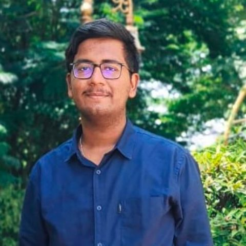

Software engineer at Microsoft. M.Tech student in AI and machine learning at BITS Pilani. Interested in sustainable, energy-efficient AI.

Green AI, meaning the energy and carbon footprint of AI workloads. Language models for analysing corporate climate disclosures. Machine learning for climate science.
Backend APIs and services for the Exchange Admin Center, the portal administrators use to manage Exchange Online, and for Exchange Server.
Built a C#/.NET Windows tool that detects and controls anomalous activity across an organisation's machines, managed from a single admin portal.
Redesigned navigation in the Exchange Admin Center, built portal performance monitoring, streamlined data pipelines with Azure Data Factory and Azure Data Explorer, and hardened authentication.
Compared fixed, statistical and machine-learning models for predicting the resources virtual network functions need, across several environments.
A CNN and LSTM model that classifies viral sequences from metagenomic data.
Compared machine-learning classifiers for predicting preterm birth in Asian and American cohorts.
Trained a CycleGAN to reconstruct faces and served it through a Flask web app.
Real-time pose feedback using PoseNet in TensorFlow.js.
Microsoft Certified: Azure Data Scientist Associate. Amazon ML Summer School.
I'm happy to hear from researchers working on sustainable AI, and from teams building AI systems.